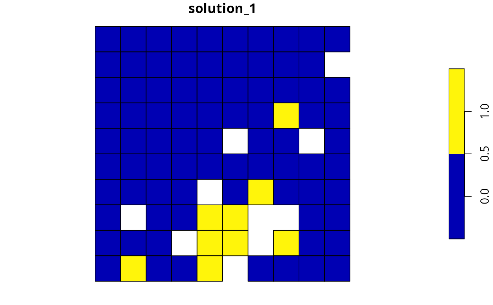
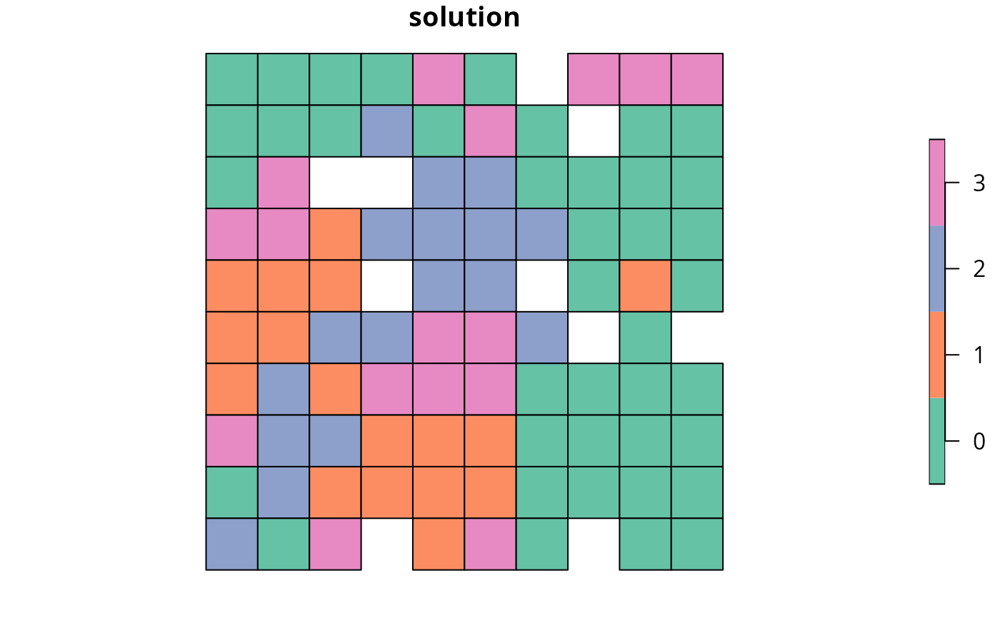

Calculate how well feature representation targets are met by a solution to
a conservation planning problem().
It is useful for understanding if features are adequately represented by
a solution.
Note that this function can only be used with problems that contain
targets.
eval_target_coverage_summary(x, solution, include_zone, include_sense) # S3 method for default eval_target_coverage_summary(x, solution, include_zone, include_sense) # S3 method for ConservationProblem eval_target_coverage_summary( x, solution, include_zone = number_of_zones(x) > 1, include_sense = number_of_zones(x) > 1 )
Arguments
| x |
|
|---|---|
| solution |
|
| include_zone |
|
| include_sense |
|
Value
tibble::tibble() object.
Here, each row describes information for a different target.
It contains the following columns:
- feature
charactername of the feature associated with each target.- zone
listofcharacterzone names associated with each target. This column is in a list-column format because a single target can correspond to multiple zones (seeadd_manual_targets()for details and examples). For an example of converting the list-column format to a standardcharactercolumn format, please see the Examples section. This column is only included if the argument toinclude_zonesisTRUE.- sense
charactersense associated with each target. Sense values specify the nature of the target. Typically (e.g. when using theadd_absolute_targets()oradd_relative_targets()functions), targets are specified using sense values indicating that the total amount of a feature held within a solution (ideally) be greater than or equal to a threshold amount (i.e. a sense value of">="). Additionally, targets (i.e. using theadd_manual_targets()function) can also be specified using sense values indicating that the total amount of a feature held within a solution must be equal to a threshold amount (i.e. a sense value of"=") or smaller than or equal to a threshold amount (i.e. a sense value of"<="). This column is only included if the argument toinclude_senseisTRUE.- total_amount
numerictotal amount of the feature available across the entire conservation planning problem for meeting each target (not just planning units selected within the solution). For problems involving a single zone, this column is calculated as the sum of all of the values for a given feature (similar to values in thetotal_amountcolumn produced by theeval_feature_representation_summary()function). For problems involving multiple zones, this column is calculated as the sum of the values for the feature associated with target (per the"feature"column), across the zones associated with the target (per the"zone"column).- absolute_target
numerictotal threshold amount associated with each target.- absolute_held
numerictotal amount held within the solution for the feature and (if relevant) zones associated with each target (per the"feature"and"zone"columns, respectively). This column is calculated as the sum of the feature data, supplied when creating aproblem()object (e.g. presence/absence values), weighted by the status of each planning unit in the solution (e.g. selected or not for prioritization).- absolute_shortfall
numerictotal amount by which the solution fails to meet each target. This column is calculated as the difference between the total amount held within the solution for the feature and (if relevant) zones associated with the target (i.e."absolute_held"column) and the target total threshold amount (i.e."absolute_target"column), with values set to zero depending on the sense specified for the target (e.g. if the target sense is>=then the difference is set to zero if the value in the"absolute_held"is smaller than that in the"absolute_target"column).- relative_target
numericproportion threshold amount associated with each target. This column is calculated by dividing the total threshold amount associated with each target (i.e."absolute_target"column) by the total amount associated with each target (i.e."total_amount"column).- relative_held
numericproportion held within the solution for the feature and (if relevant) zones associated with each target (per the"feature"and"zone"columns, respectively). This column is calculated by dividing the total amount held for each target (i.e."absolute_held"column) by the total amount for with each target (i.e."total_amount"column).- relative_shortfall
numericproportion by which the solution fails to meet each target. This column is calculated by dividing the total shortfall for each target (i.e."absolute_shortfall"column) by the total amount for each target (i.e."total_amount"column).- met
logicalindicating if each target is met by the solution. This column is calculated by checking if the total shortfall associated with each target (i.e."absolute_shortfall" column) is equal to zero.
Solution format
Broadly speaking, the argument to solution must be in the same format as
the planning unit data in the argument to x.
Further details on the correct format are listed separately
for each of the different planning unit data formats:
xhasnumericplanning unitsThe argument to
solutionmust be anumericvector with each element corresponding to a different planning unit. It should have the same number of planning units as those in the argument tox. Additionally, any planning units missing cost (NA) values should also have missing (NA) values in the argument tosolution.xhasmatrixplanning unitsThe argument to
solutionmust be amatrixvector with each row corresponding to a different planning unit, and each column correspond to a different management zone. It should have the same number of planning units and zones as those in the argument tox. Additionally, any planning units missing cost (NA) values for a particular zone should also have a missing (NA) values in the argument tosolution.xhasRasterplanning unitsThe argument to
solutionbe aRasterobject where different grid cells (pixels) correspond to different planning units and layers correspond to a different management zones. It should have the same dimensionality (rows, columns, layers), resolution, extent, and coordinate reference system as the planning units in the argument tox. Additionally, any planning units missing cost (NA) values for a particular zone should also have missing (NA) values in the argument tosolution.xhasdata.frameplanning unitsThe argument to
solutionmust be adata.framewith each column corresponding to a different zone, each row corresponding to a different planning unit, and cell values corresponding to the solution value. This means that if adata.frameobject containing the solution also contains additional columns, then these columns will need to be subsetted prior to using this function (see below for example withsf::sf()data). Additionally, any planning units missing cost (NA) values for a particular zone should also have missing (NA) values in the argument tosolution.xhasSpatialplanning unitsThe argument to
solutionmust be aSpatialobject with each column corresponding to a different zone, each row corresponding to a different planning unit, and cell values corresponding to the solution value. This means that if theSpatialobject containing the solution also contains additional columns, then these columns will need to be subsetted prior to using this function (see below for example withsf::sf()data). Additionally, the argument tosolutionmust also have the same coordinate reference system as the planning unit data. Furthermore, any planning units missing cost (NA) values for a particular zone should also have missing (NA) values in the argument tosolution.xhassf::sf()planning unitsThe argument to
solutionmust be asf::sf()object with each column corresponding to a different zone, each row corresponding to a different planning unit, and cell values corresponding to the solution value. This means that if thesf::sf()object containing the solution also contains additional columns, then these columns will need to be subsetted prior to using this function (see below for example). Additionally, the argument tosolutionmust also have the same coordinate reference system as the planning unit data. Furthermore, any planning units missing cost (NA) values for a particular zone should also have missing (NA) values in the argument tosolution.
See also
Examples
# \dontrun{ # set seed for reproducibility set.seed(500) # load data data(sim_pu_raster, sim_pu_sf, sim_features, sim_pu_zones_sf, sim_features_zones) # build minimal conservation problem with raster data p1 <- problem(sim_pu_raster, sim_features) %>% add_min_set_objective() %>% add_relative_targets(0.1) %>% add_binary_decisions() %>% add_default_solver(verbose = FALSE) # solve the problem s1 <- solve(p1) # print solution print(s1)#> class : RasterLayer #> dimensions : 10, 10, 100 (nrow, ncol, ncell) #> resolution : 0.1, 0.1 (x, y) #> extent : 0, 1, 0, 1 (xmin, xmax, ymin, ymax) #> crs : NA #> source : memory #> names : layer #> values : 0, 1 (min, max) #># calculate target coverage by the solution r1 <- eval_target_coverage_summary(p1, s1) print(r1, width = Inf) # note: `width = Inf` tells R to print all columns#> # A tibble: 5 x 9 #> feature met total_amount absolute_target absolute_held absolute_shortfall #> <chr> <lgl> <dbl> <dbl> <dbl> <dbl> #> 1 layer.1 TRUE 83.3 8.33 8.91 0 #> 2 layer.2 TRUE 31.2 3.12 3.13 0 #> 3 layer.3 TRUE 72.0 7.20 7.34 0 #> 4 layer.4 TRUE 42.7 4.27 4.35 0 #> 5 layer.5 TRUE 56.7 5.67 6.01 0 #> relative_target relative_held relative_shortfall #> <dbl> <dbl> <dbl> #> 1 0.1 0.107 0 #> 2 0.1 0.100 0 #> 3 0.1 0.102 0 #> 4 0.1 0.102 0 #> 5 0.1 0.106 0# build minimal conservation problem with polygon (sf) data p2 <- problem(sim_pu_sf, sim_features, cost_column = "cost") %>% add_min_set_objective() %>% add_relative_targets(0.1) %>% add_binary_decisions() %>% add_default_solver(verbose = FALSE) # solve the problem s2 <- solve(p2) # print first six rows of the attribute table print(head(s2))#> Simple feature collection with 6 features and 4 fields #> geometry type: POLYGON #> dimension: XY #> bbox: xmin: 0 ymin: 0.9 xmax: 0.6 ymax: 1 #> CRS: NA #> cost locked_in locked_out solution_1 geometry #> 1 215.8638 FALSE FALSE 0 POLYGON ((0 1, 0.1 1, 0.1 0... #> 2 212.7823 FALSE FALSE 0 POLYGON ((0.1 1, 0.2 1, 0.2... #> 3 207.4962 FALSE FALSE 0 POLYGON ((0.2 1, 0.3 1, 0.3... #> 4 208.9322 FALSE TRUE 0 POLYGON ((0.3 1, 0.4 1, 0.4... #> 5 214.0419 FALSE FALSE 0 POLYGON ((0.4 1, 0.5 1, 0.5... #> 6 213.7636 FALSE FALSE 0 POLYGON ((0.5 1, 0.6 1, 0.6...# calculate target coverage by the solution r2 <- eval_target_coverage_summary(p2, s2[, "solution_1"]) print(r2, width = Inf)#> # A tibble: 5 x 9 #> feature met total_amount absolute_target absolute_held absolute_shortfall #> <chr> <lgl> <dbl> <dbl> <dbl> <dbl> #> 1 layer.1 TRUE 74.5 7.45 8.05 0 #> 2 layer.2 TRUE 28.1 2.81 2.83 0 #> 3 layer.3 TRUE 64.9 6.49 6.65 0 #> 4 layer.4 TRUE 38.2 3.82 3.87 0 #> 5 layer.5 TRUE 50.7 5.07 5.41 0 #> relative_target relative_held relative_shortfall #> <dbl> <dbl> <dbl> #> 1 0.1 0.108 0 #> 2 0.1 0.101 0 #> 3 0.1 0.103 0 #> 4 0.1 0.101 0 #> 5 0.1 0.107 0# build multi-zone conservation problem with polygon (sf) data p3 <- problem(sim_pu_zones_sf, sim_features_zones, cost_column = c("cost_1", "cost_2", "cost_3")) %>% add_min_set_objective() %>% add_relative_targets(matrix(runif(15, 0.1, 0.2), nrow = 5, ncol = 3)) %>% add_binary_decisions() %>% add_default_solver(verbose = FALSE) # solve the problem s3 <- solve(p3) # print first six rows of the attribute table print(head(s3))#> Simple feature collection with 6 features and 9 fields #> geometry type: POLYGON #> dimension: XY #> bbox: xmin: 0 ymin: 0.9 xmax: 0.6 ymax: 1 #> CRS: NA #> cost_1 cost_2 cost_3 locked_1 locked_2 locked_3 solution_1_zone_1 #> 1 215.8638 183.3344 205.4113 FALSE FALSE FALSE 0 #> 2 212.7823 189.4978 209.6404 FALSE FALSE FALSE 0 #> 3 207.4962 193.6007 215.4212 TRUE FALSE FALSE 0 #> 4 208.9322 197.5897 218.5241 FALSE FALSE FALSE 0 #> 5 214.0419 199.8033 220.7100 FALSE FALSE FALSE 0 #> 6 213.7636 203.1867 224.6809 FALSE FALSE FALSE 0 #> solution_1_zone_2 solution_1_zone_3 geometry #> 1 0 1 POLYGON ((0 1, 0.1 1, 0.1 0... #> 2 0 0 POLYGON ((0.1 1, 0.2 1, 0.2... #> 3 0 0 POLYGON ((0.2 1, 0.3 1, 0.3... #> 4 0 0 POLYGON ((0.3 1, 0.4 1, 0.4... #> 5 0 0 POLYGON ((0.4 1, 0.5 1, 0.5... #> 6 1 0 POLYGON ((0.5 1, 0.6 1, 0.6...# create new column representing the zone id that each planning unit # was allocated to in the solution s3$solution <- category_vector( s3[, c("solution_1_zone_1", "solution_1_zone_2", "solution_1_zone_3")]) s3$solution <- factor(s3$solution) # plot solution plot(s3[, "solution"])# calculate target coverage by the solution r3 <- eval_target_coverage_summary( p3, s3[, c("solution_1_zone_1", "solution_1_zone_2", "solution_1_zone_3")]) print(r3, width = Inf)#> # A tibble: 15 x 11 #> feature zone sense met total_amount absolute_target absolute_held #> <chr> <list> <chr> <lgl> <dbl> <dbl> <dbl> #> 1 feature_1 <chr [1]> >= TRUE 75.1 13.8 15.2 #> 2 feature_2 <chr [1]> >= TRUE 28.0 4.82 5.18 #> 3 feature_3 <chr [1]> >= TRUE 65.0 12.8 12.8 #> 4 feature_4 <chr [1]> >= TRUE 38.0 5.58 6.56 #> 5 feature_5 <chr [1]> >= TRUE 51.2 9.27 10.2 #> 6 feature_1 <chr [1]> >= TRUE 75.1 9.06 14.2 #> 7 feature_2 <chr [1]> >= TRUE 28.0 4.23 5.43 #> 8 feature_3 <chr [1]> >= TRUE 65.0 12.5 13.0 #> 9 feature_4 <chr [1]> >= TRUE 38.0 6.96 6.98 #> 10 feature_5 <chr [1]> >= TRUE 51.2 8.76 9.23 #> 11 feature_1 <chr [1]> >= TRUE 75.1 9.63 13.2 #> 12 feature_2 <chr [1]> >= TRUE 28.0 5.29 5.30 #> 13 feature_3 <chr [1]> >= TRUE 65.0 11.5 11.5 #> 14 feature_4 <chr [1]> >= TRUE 38.0 4.43 6.76 #> 15 feature_5 <chr [1]> >= TRUE 51.2 8.86 8.88 #> absolute_shortfall relative_target relative_held relative_shortfall #> <dbl> <dbl> <dbl> <dbl> #> 1 0 0.183 0.202 0 #> 2 0 0.173 0.185 0 #> 3 0 0.198 0.198 0 #> 4 0 0.147 0.173 0 #> 5 0 0.181 0.200 0 #> 6 0 0.121 0.189 0 #> 7 0 0.151 0.194 0 #> 8 0 0.193 0.201 0 #> 9 0 0.183 0.183 0 #> 10 0 0.171 0.180 0 #> 11 0 0.128 0.175 0 #> 12 0 0.189 0.189 0 #> 13 0 0.176 0.177 0 #> 14 0 0.116 0.178 0 #> 15 0 0.173 0.173 0# create a new column with character values containing the zone names, # by extracting these data out of the zone column # (which is in list-column format) r3$zone2 <- vapply(r3$zone, FUN.VALUE = character(1), paste, sep = " & ") # print r3 again to show the new column print(r3, width = Inf)#> # A tibble: 15 x 12 #> feature zone sense met total_amount absolute_target absolute_held #> <chr> <list> <chr> <lgl> <dbl> <dbl> <dbl> #> 1 feature_1 <chr [1]> >= TRUE 75.1 13.8 15.2 #> 2 feature_2 <chr [1]> >= TRUE 28.0 4.82 5.18 #> 3 feature_3 <chr [1]> >= TRUE 65.0 12.8 12.8 #> 4 feature_4 <chr [1]> >= TRUE 38.0 5.58 6.56 #> 5 feature_5 <chr [1]> >= TRUE 51.2 9.27 10.2 #> 6 feature_1 <chr [1]> >= TRUE 75.1 9.06 14.2 #> 7 feature_2 <chr [1]> >= TRUE 28.0 4.23 5.43 #> 8 feature_3 <chr [1]> >= TRUE 65.0 12.5 13.0 #> 9 feature_4 <chr [1]> >= TRUE 38.0 6.96 6.98 #> 10 feature_5 <chr [1]> >= TRUE 51.2 8.76 9.23 #> 11 feature_1 <chr [1]> >= TRUE 75.1 9.63 13.2 #> 12 feature_2 <chr [1]> >= TRUE 28.0 5.29 5.30 #> 13 feature_3 <chr [1]> >= TRUE 65.0 11.5 11.5 #> 14 feature_4 <chr [1]> >= TRUE 38.0 4.43 6.76 #> 15 feature_5 <chr [1]> >= TRUE 51.2 8.86 8.88 #> absolute_shortfall relative_target relative_held relative_shortfall zone2 #> <dbl> <dbl> <dbl> <dbl> <chr> #> 1 0 0.183 0.202 0 zone_1 #> 2 0 0.173 0.185 0 zone_1 #> 3 0 0.198 0.198 0 zone_1 #> 4 0 0.147 0.173 0 zone_1 #> 5 0 0.181 0.200 0 zone_1 #> 6 0 0.121 0.189 0 zone_2 #> 7 0 0.151 0.194 0 zone_2 #> 8 0 0.193 0.201 0 zone_2 #> 9 0 0.183 0.183 0 zone_2 #> 10 0 0.171 0.180 0 zone_2 #> 11 0 0.128 0.175 0 zone_3 #> 12 0 0.189 0.189 0 zone_3 #> 13 0 0.176 0.177 0 zone_3 #> 14 0 0.116 0.178 0 zone_3 #> 15 0 0.173 0.173 0 zone_3# }